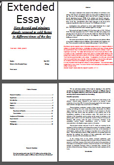

IB Docs (2) Team
IB Docs (2) Team

Extended essay - self review quiz for students

Once students have completed an outline first draft of their extended essay is it important to check that the contents of the essay meet the assessment requirements. After all the hard work to collect data and analyse it the written parts of the essay must construct a logical argument and the presentation must be appropriate. These questions will help students to 'self-review' their extended essay and improve the final result. They will also help to make the feedback on the first draft a little easier.
Biology Extended essay - self review questions
Guiding Questions
How good is the first draft of my extended essay?
What do I need to improve?
How can I improve my EE first draft?
Once you have completed a first draft of your extended essay answer the following questions which will help to identify the essential components of your extended essay in need of improvement and show you what is already good.
1. Where is your research question (RQ)? Tick all the places where you need to mention the RQ.
The research question is so important, it must be
- towards the begining of the introduction, if not on the first page
- (it can also be on the title page but this is optional).
The examiner will be looking to see if your extended essay is well focussed on the RQ so it needs to be one of the first things.
Be careful to ensure that the wording is always exactly the same each time it is stated.
2. How sharply focused is your research question?
Select the question which most resembles your research question.
Obviously the best research questions mention specific variables to study and also the range of situations to be studied, the scope. This ensures that the RQ is sharply focused and clearly stated.
Be careful to avoid vague descriptions of variables, e.g. "light intensity", is better than "light".
Check that your research question wording is always the same, try to ensure that your essay title puts the RQ into the context of the essay.
E.g. Title: Exploring the most effective use of artifical lighting in growth of plants indoors
Research question: What is the effect of light intensity on the amount of chlorophyll in cells in the seed leaves of sycamore trees under laboratory lamps ?
3. Does your introduction put the RQ into context properly? Which of the following can you find in your introduction?
Tick the answers which match your EE best.
The introduction must
- set the question into context,
- explain its significance and
- say why it is worthy of study.
Examiners' reports suggest that a good way to do this is to provide a review of the articles / books / papers which you have read about the topic. This will provide a context.
If you relate the review of articles to the research question this will show it's significance in the broader biology topic.
Please remember to say what your extended essay is hoping to find out, this is the worthiness. Why you are interested in the topic is also part of the worthiness of the topic but the biological answers should be more important.
Of course there is nothing stopping you defining biological terms, explaining key ideas, using quotes from your sources, etc. as part of this but the three points above should be the focus of your introduction.
4. You have written about the topic and refered to sources of biological information, (journal articles, text books, etc.)
Check through these sources and imagine that they are the compulsory reading list for your first term at university where you will be (coincidentally) studying the same topic as your extended essay.
How do you feel about this reading list? What does it look like?
Select any answers which match your EE best.
The extended essay examiner will be looking to see if you have carefully chosen your sources as a part of the EE planning.
They will also look to see if you have chosen different types of source, like books, academic papers, web pages.
This means that there are probably:
- references to specific pages of a book
- clear titles for every source used
- some sources which were rejected, and not included in the reference list
- clear explanations of the interest / relevence of each source in the introduction
- citations placed carefully in the text
- few (if any) references in the bibliography without citations.
5. If you have collected data using an experiment, or from carefully selected sources, look at your planning.
What can you see?
There are many ways to investigate a research question but remember that the examiner is looking to award marks for your plan of the experiment.
The EE should show that:
- the experiment has been well planned
- relevent apparatus has been selected
- you understand what you have done.
6. One difficult aspect of the extended essay is to develop a "reasoned argument"
Which of these comments could be said about your extended essay?
The examiner is looking for a clearly stated logical step by step explanation.
In experiments which collect data, and follow a clear structure tend to show logical reasoning, but often the other parts of the essay don't fit so well.
One way to help this is to use "topic sentences" at the start of each paragraph. Tell the reader what each paragraph is about.
7. What does the analysis of your data look like. Choose the statements which match your EE from the list below.
There is no explicit requirement to carry out a statistical analysis of the data.
The analysis shoud be appropriate and should clearly identify trends in the data.
The trends should help to answer the research question.
8. Now focus on your use of language, especially biological terms. Which of the following seems to fit your EE best.
You need to write in a clear and precise way to score highly on this aspect of the EE.
You also need to use biological terminology correctly, showing correct understanding of the terms.
9. What does your discussion / conclusion look like? Tick the points below which apply to your EE.
The conclusion should be concise and include reference tothe research question. For it to be effective it should include many of the correct points above.
10. What is the formal presentation of your EE like?
There are lots of things to check here. But none of them are difficult to do and there are marks at stake.
It is sometimes a bit time consuming to do all these things but well worth the effort.
After answering all the questions click "Check" on the quiz above.
The good aspects of your extended essay appear green and those in need of improvement are red
It is now important to:
- Make a list of the things you need to improve
- Read the notes under each question - these help to understand what to do.
- Ask your EE supervisor about anything which you are unsure about.
Good luck!
Teacher's notes
This quiz is aimed at student who have already produced a first draft of their extended essay.
Students sometimes find it difficult to read the assessment criteria and work out which parts of their essay are good and where there is need for improvement.
Students answer the questions and then click "check"
Parts which need improving will be highlighted in red, aspects which are already good will be green.
Students should make a list of the red aspects.
With each question is an explanation of the assessment criteria which will help guide students to making suitable improvements to their first draft.
It may be even better for students to complete the quiz with their teacher.
 Twitter
Twitter
 Facebook
Facebook
 LinkedIn
LinkedIn